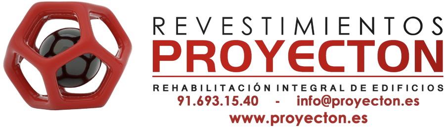
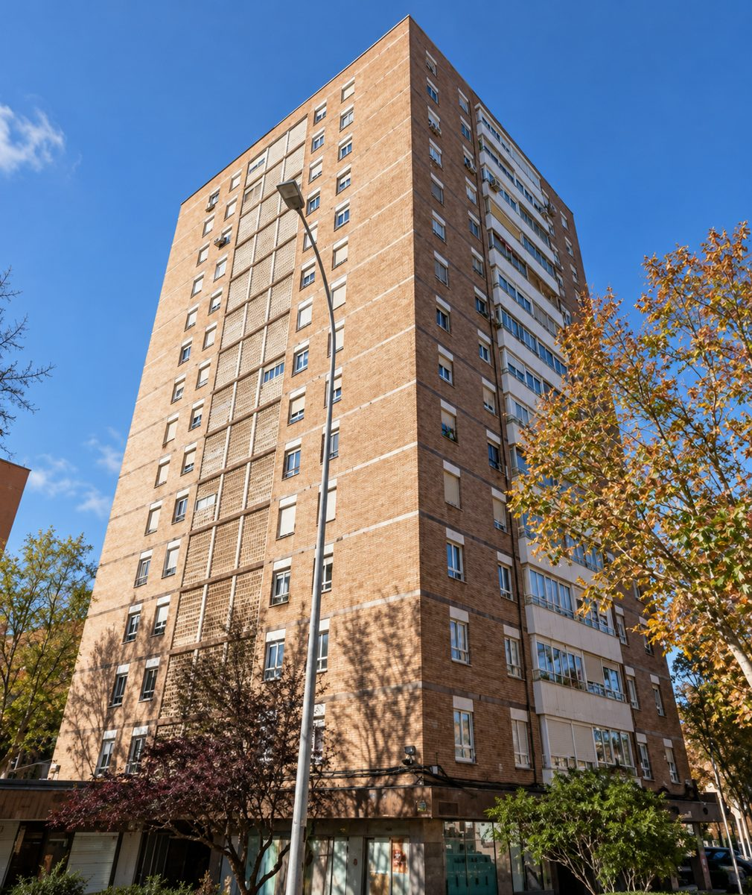
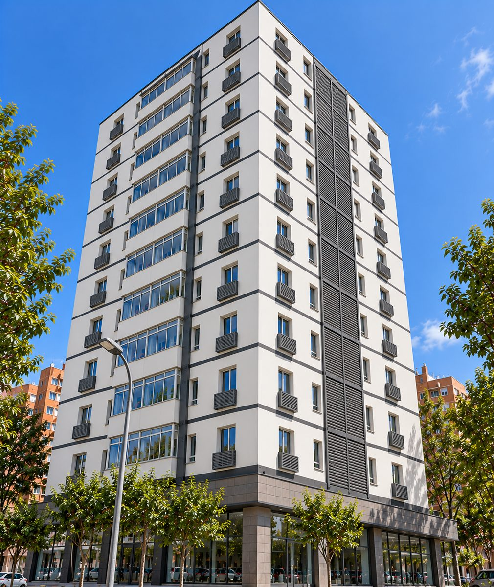
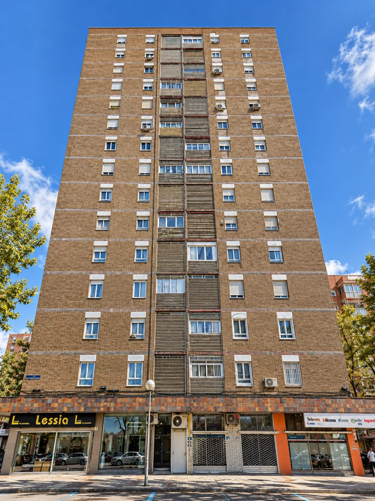
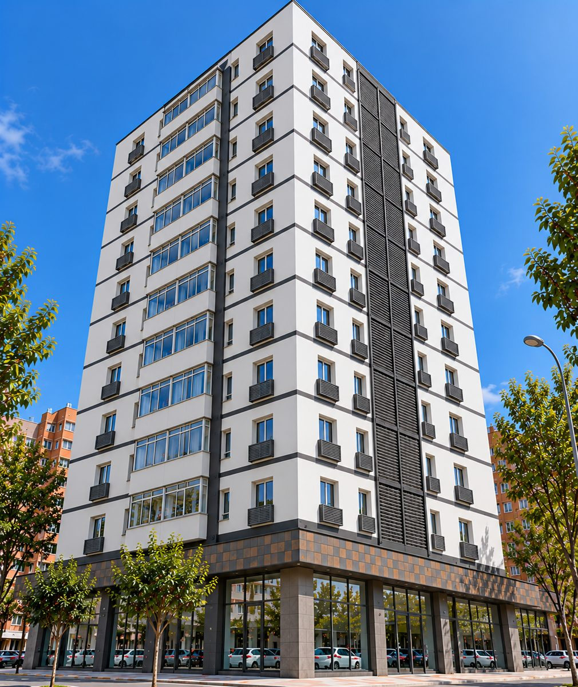
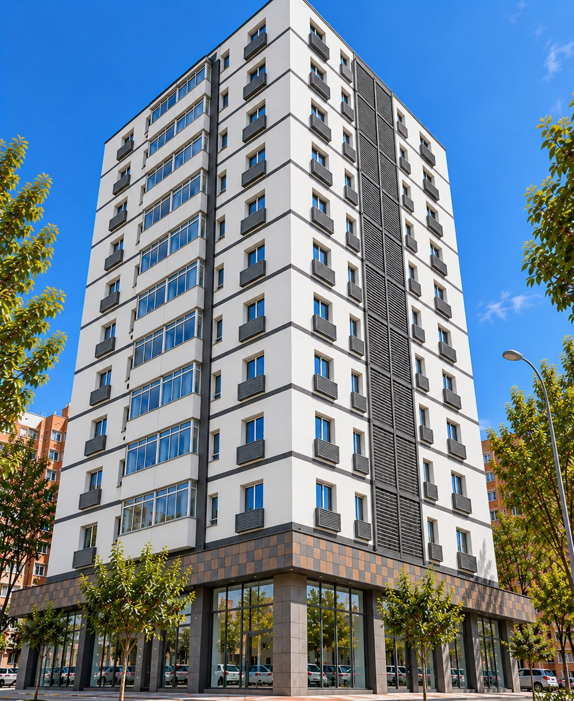
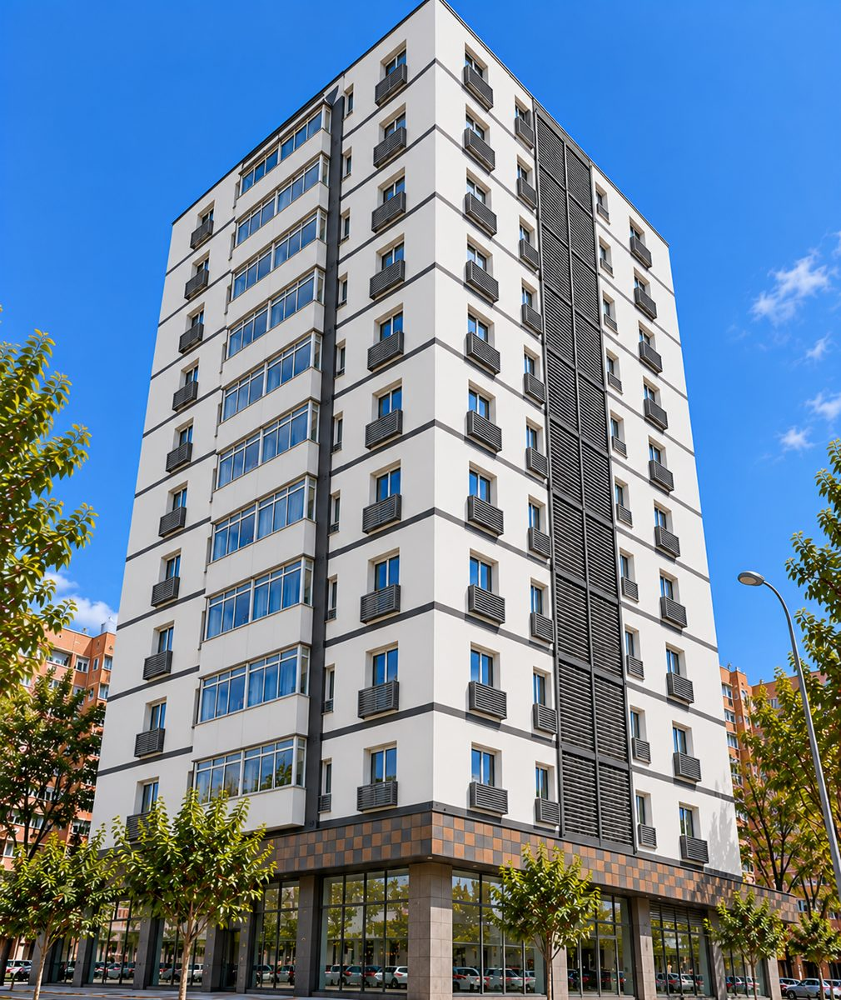

Doctor García Tapia 128Rehabilitación integral · MA-26-219Fachada aislada, cubierta nueva y una sala de calderas con aerotermia y fotovoltaica. Así va a quedar su edificio y así lo vamos a hacer, paso a paso.
Fachada con aislamiento térmico, cubierta aislada y estanca, celosías nuevas, equipos de climatización ocultos y una central térmica con aerotermia, caldera de condensación y fotovoltaica. Más confort, menos factura y un edificio revalorizado.
Importes sin ayudas. Proyecton gestiona íntegramente las subvenciones de rehabilitación y los CAE de la comunidad: estudio, tramitación y justificación. Capítulo opcional disponible (+92.696,08 €). Presupuesto emitido el 23/10/2026, válido hasta el 22/11/2026.





